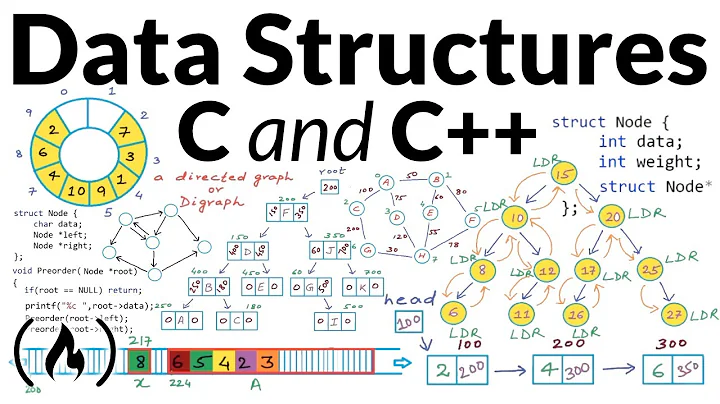

Sign in
Home
Shorts
Subscriptions
Library
History
All
Live
Music
News
Live television
Sitecoms
Gaming
Brazilian music
Hymm
Meditation
Saints
Podcasts
20:15
Discover the most beautiful beaches in the world
Channel 1
167K views • 1 year
07:05
Sagrada Familia temple in Barcelona
Channel 2
3.7M views • 5 years
1:02:30
Physics Nobel prize 2022: Quantum entanglement and Bell nonlocality
Channel 3
15K views • 2 months
50:07
Tutorial: build Hogwarts in Minecraft
Channel 4
837 views • 1 hour
47:00
Learn about Plato and Aristotle
Channel 5
500k views • 3 years

1:27:31
Data Structures in C and C++
Channel 6
14K views • 7 months